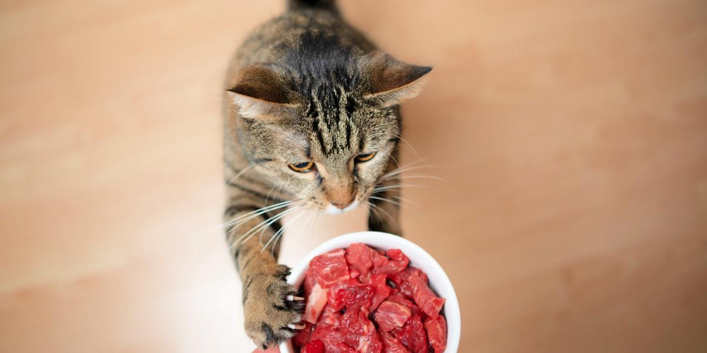

Raw Chicken and Salmon Recipe

Description
This recipes is from Health,Home and Happiness. The recipe features raw chicken and salmon as its primary ingredients.
Ingredients:
- 700g raw chicken wings (bone-in, skin-on)
- 100g raw salmon (with bone)
- 100g raw chicken heart
- 50g raw beef kidney
- 50g raw chicken liver
- 1 whole egg, raw (with shell)
- 1 teaspoon taurine supplement
- 2 cups water
Instructions:
- Cut the salmon and organ meats into chunks that will fit through your meat grinder.
- Divide the chicken wings as needed to fit through the grinder.
- Place a bowl under the grinder and feed the meat and organs through.
- Transfer the ground mixture to a large bowl then add the taurine, egg, and water to combine.
- Portion out the mixture and freeze or refrigerate.
return home